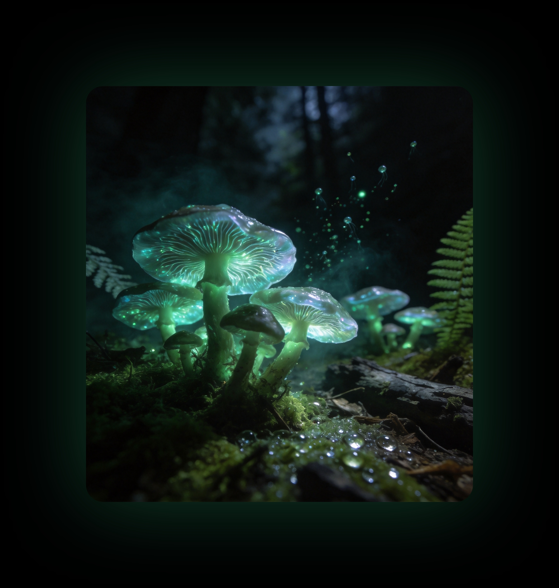
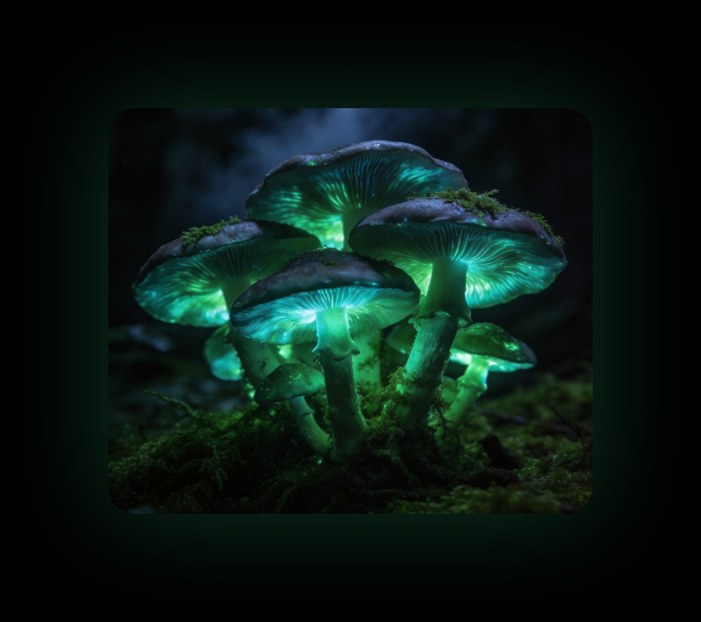
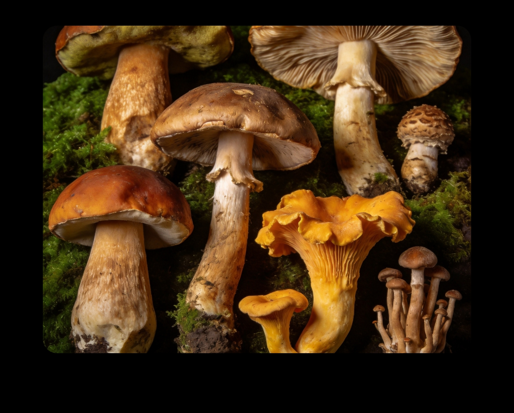
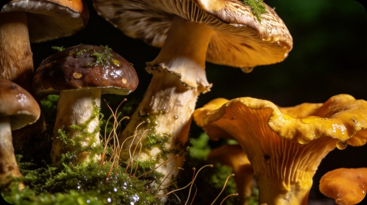

拍照上传，AI 秒级检索识别 12,000+ 野生菌种。从形态特征、分布习性到食毒鉴别与烹饪指南，一站式读懂菌物世界。
已被 500 万菌友使用 · 识别准确率 98.6% · 联合中科院菌物研究所共建数据库


不需要任何菌物学基础，一部手机即可完成专业级检索与鉴别
在山野中随手拍下菌盖、菌褶与生境，或直接上传相册中的照片
多模态大模型比对形态特征库，秒级返回候选菌种与置信度排序
学名、分布、食毒性、相似种对比一目了然，可收藏进个人菌物志
从认知到鉴别再到餐桌，覆盖菌物探索的完整旅程


联合中科院菌物研究所共建权威数据库，每一个物种都有完整的多维度档案。
· 12,000+ 物种高清图鉴与拉丁学名档案 · 形态特征、生境分布、生长季节全维度记录 · 相似菌种智能对比，关键差异一眼看清
进入菌物图鉴 →多模态大模型融合权威形态特征库，识别结果附带完整依据，而不是一个冷冰冰的名字。
· 候选菌种置信度排序，识别依据逐条展示 · 剧毒菌种即时红色预警，安全永远第一位 · 支持离线识别包，深山无信号也能用
体验 AI 鉴菌 →从食毒性分级到去毒处理、从民间食用传统到星级食谱，让每一朵菌都安全地抵达餐桌。
· 食毒性五级分级标识，风险等级一目了然 · 云南、东北等地食用传统与民间经验汇编 · 去毒处理方法与主厨级烹饪食谱详解
查看食菌指南 →从检索到社区，从预警到出行，功能持续生长
按名称、形态、生境、季节多条件组合检索，模糊描述也能找到目标菌种
基于地理位置的毒菌出没预警与误食应急指南，误食急救流程一键直达
晒菌、求鉴定、约采菌，500 万菌友的山野日常都在这里发生
菌物学家与资深采菌人在线坐镇，疑难菌种人工复核，24 小时内回复
菌物热力分布图实时更新，哪里出菌、出什么菌，出发前就心中有数
结合节气与降水的出菌预测日历，牛肝菌季、鸡枞季不错过每一茬
“在山里拍了朵见手青，App 三秒给出学名和毒性提示，还推荐了青椒爆炒的做法，太懂云南人了。”
“作为菌物学科普博主，图鉴的专业度让我惊讶——拉丁学名、形态描述、生境记录都很严谨，直接成了我的选题库。”
“毒菌预警救过我们一次——孩子摘的野菌被识别为剧毒的致命鹅膏，至今后怕，也至今感激。”